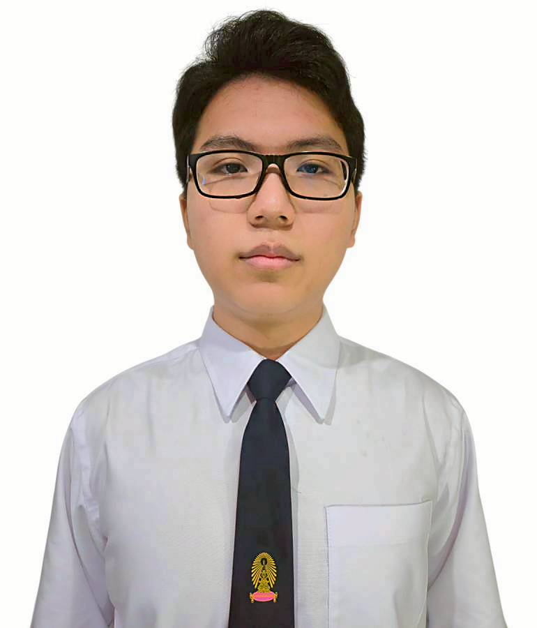

Chulalongkorn University
B.Eng. in Computer Engineering & Digital Technology (Sandbox) - 2025 - Present

Second-Year Undergraduate - Computer Engineering & Digital Technology (Sandbox)
Faculty of Engineering, Chulalongkorn University - Class of 2025
Second-year undergraduate student in Computer Engineering and Digital Technology (Sandbox), Faculty of Engineering, Chulalongkorn University. My work and learning path focus on artificial intelligence, computer vision, AIoT, data science, cybersecurity, and software systems. This CV expands the one-page resume into a chronological record of education, training, competitions, awards, projects, leadership, and technical growth.
Currently studying in an engineering program that combines computer engineering foundations with digital technology, software development, data-driven problem solving, and applied AI. My current academic direction connects algorithmic thinking, machine learning, computer vision, and practical engineering deployment.
Completed upper secondary education with strong academic performance and sustained participation in computer science, mathematics, cybersecurity, and innovation activities. Received the Academic Excellence Honor Badge, Second Place, and Certificates of Excellence in Academic Achievement and Good Conduct across 12 consecutive academic years.
Developed an applied AI project for AXONS Corporate's AXONS Eyes Team, with work spanning computer-vision model evaluation, data pipelines, visual-quality analysis, and edge-focused deployment. The internship connected my academic AI and computer-vision experience with real industrial constraints and production-oriented project development.
Contributed to DevOps and security work for CEDT Talent Journey, a student activity management platform supporting event registration, evaluations, attendance tracking, and credit equivalence. Responsibilities included improving platform security, developing administrative tools, and supporting workflows for staff to review activity information and approve credit transfer requests.
Served as a Grade 12 student committee member in the Academic Division and acted as a liaison with the Information Technology Department, supporting academic coordination and technology-related communication within the school.
Participated in technology-focused workshops and collaborative activities to explore computer science fundamentals, emerging technologies, and practical development skills.
Completed a short internship and presented "Dynamic Chair," a project using ESP32 as a core component for a business-oriented application. The experience introduced me to applied programming, embedded prototyping, and communicating a technical concept in a workplace setting.
Completed a hands-on hybrid workshop exploring the intersection of neuroscience and AI, analyzing real brain-signal datasets with Python through self-paced lessons, Jupyter/Google Colab labs, Discord office hours, two onsite workshops, and a mini project.
Progressed through AIAT's national AI engineer development pathway, beginning with more than 10,000 Level 1 applicants and qualifying into the 150-participant Level 2 cohort. Level 1 covered AIAT MOOC upskill/reskill coursework, Foundation AI (Theory), and a qualification hackathon. Level 2 combined one month of online preparation, four mini-hackathons, and a one-month onsite intensive AI bootcamp with four industry-challenge hackathons across five AI domains, while building networks with leading instructors and experts.
Level 3 focused on real workplace experience. I was selected for a two-month AI apprenticeship at AXONS Corporate, where I developed an applied project before returning to present the internship project and complete the program-wide evaluation.
Selected as a representative of the POSN Computer Center, Satriwithaya School under the Royal Patronage - Kasetsart University, and participated in the 20th Thailand Olympiad in Informatics. The experience strengthened my algorithmic thinking, competitive programming discipline, and ability to solve complex problems under time constraints.
Completed POSN Computer Science training through Camp 1 and Camp 2. Camp 1 was held from 2 - 18 October 2023 at POSN Center, Satree Wat Mahapruttaram Girls' School under the Royal Patronage of Her Majesty the Queen, Bangkok. Camp 2 was held from 18 March - 3 April 2024 at the Faculty of Science, Kasetsart University, Bangkok.
Selected as one of 45 participants from over 500 applicants to join a 10-week AI training and hands-on project development program organized by Vidyasirimedhi Institute of Science and Technology (VISTEC). The program introduced me to AI project development, independent research, and applied experimentation.
Participated in Thailand Mathematics Academic Camp activities, including the 11th TMAC from 29 April - 1 May 2023. This continued my long-term interest in mathematics and problem solving.
Developed an end-to-end EEG signal processing and neural decoding pipeline analyzing Overt Speech (vocalized) and Mimed Speech (silent articulation) in Thai across 80,000 trials (20 participants, 20 words) under Brain Code Camp 2026. Implemented preprocessing pipelines, trial quality auditing, within-subject neural decoding using EEGNet, and electrophysiological artifact decomposition via Picard ICA with automated ICLabel classification.
Conducted rigorous cross-subject Leave-One-Subject-Slot-Out (LOSO) evaluation using bandpower features (4–30 Hz Logistic Regression, 30–45 Hz Spatial Shrinkage LDA), uncovering experimental recording-group batch confounds across word cohorts (~73% cross-half vs. 51.4% same-half chance level). Benchmarked few-shot calibration strategies, achieving 77.8% cross-mode accuracy with only 20 calibration trials per word.
Link: github.com/nontaphatfirm/Thai-Overt-Mimed-Speech-EEG • medium.com/@nontaphatfirm/thai-overt-mimed-speech-eeg
Developed an independent, non-blocking camera health monitoring layer in collaboration with AXONS Corporate under Super AI Engineer Season 6. It operates as an asynchronous sidecar accompanying primary CCTV analytics pipelines, outputting camera health metadata to detect camera tampering (FOV shifts) and scene drift before anomalies compromise downstream Computer Vision models.
Architected a dual-head detection engine: a geometric head (AKAZE + RANSAC homography) to confirm coherent displacement, and a structural head leveraging multi-profile baselines and runtime object masking to eliminate false positives from human activity. Benchmarked light-normalized residual scoring (0.35s edge processing) and SSIM profiling across 3,657 samples, deploying on edge for table dining turnover monitoring.
Poster: Technical Poster Presentation
Led software and model design for a 10-member team building an on-device running-form analyzer. A Nano 33 BLE with an LSM9DS1 streams raw accelerometer and gyroscope data, while the UNO Q Linux side runs an XGBoost classifier with a TFLite Transformer fallback to assess cadence, vertical oscillation, ground contact time, trunk forward lean, heel-strike likelihood, and impact loading rate.
Integrated Modulino Thermo for real-time temperature, humidity, and heat-index context, broadcast results over BLE, and visualized the analysis on a React + Vite dashboard. The project received the Academic Popular Vote award at the WellSense AIoT Hackathon.
Link: thescamperss6.com/en/projects/formwings • github.com/thhanabun/FORMWiNGs_HW • Video Demo
Built an AI-powered Thailand travel recommendation web app that turns an uploaded mood image into up to five matching destinations. The system uses a three-agent pipeline: Gemini vision extracts Thai vibe keywords, Tavily searches local travel reviews and blogs, and Gemini reasoning ranks destinations with descriptions, local tips, transport guidance, food suggestions, photos, and Google Maps links.
Implemented the Gradio interface and Python workflow with Gemini 2.0 Flash, Tavily AI Search, Pillow, and python-dotenv, supporting optional filtering across Thailand's 77 provinces and 6 regions.
Developed a real-time computer-vision project that detects student behavior in classroom settings under AI Builders 2024. The project required independent research across local and international references, and received a Silver Medal at the 9th Demonstration Academic Fair 2024 under the National and International Innovation Creation Project at Chulalongkorn University Demonstration School.
Link: github.com/nontaphatfirm/Classroom-Behavior-Detector • medium.com/@nontaphatfirm/student-behavior-detector-in-classroom
Participated as part of the development team for an AI-powered game designed to reduce stress and support mental-health awareness. The project explored how conversational AI and game design can create a listening-oriented experience for users.
Received the Academic Popular Vote award for "FormWings," an on-device running-form analyzer developed during Super AI Engineer Season 6.
Received a Silver Medal, 2,000-baht scholarship, and trophy at the 9th Demonstration Academic Fair, "Essential Soft Skills for the Future," Upper Secondary Level, held at the Faculty of Education, Chulalongkorn University, for "AI Student Behavior Detector in Classroom."
Received First Runner-Up Team Award with a 10,000-baht scholarship, honorary plaque, and medals from the Royal Thai Armed Forces Headquarters.
Received a Gold Medal in the 12th Thailand Mathematics Contest for outstanding mathematical ability.
Received a Silver Medal in the 11th Thailand Mathematics Contest for outstanding mathematical ability.
Received the award at the 71st Student Arts and Crafts Fair, Bangkok Educational Service Area Office 2, Academic Year 2023.
Awarded by Kasetsart University Laboratory School to students with outstanding academic ability and exemplary conduct.
Received Certificates of Excellence in Academic Achievement and Good Conduct throughout the full 12-year period from primary education through upper secondary level.
Achieved 5th place in an undergraduate-level Data Science and Machine Learning competition sponsored by Google, Gulf, and Bright Hair Studio, working on a medical computer-vision challenge. The team was composed entirely of first-year students.
Represented Kasetsart University Laboratory School in the national high-school cybersecurity competition. Also competed in Thailand Cyber Top Talent 2023 and placed 24th out of 272 teams.
Participated in C-language computer programming problem-solving competitions. In 2024, the team advanced to Round 2 and placed among the top 36 teams out of 283 teams nationwide.
Represented Kasetsart University Laboratory School in producing a demo for Workpoint Channel 23's "GEN WIT TV," a quiz competition involving science, engineering, mathematics, and technology.
Classical guitar, table tennis, badminton, investment, health, exploring technology-related content, and staying updated on emerging trends in AI, software engineering, and digital technology.